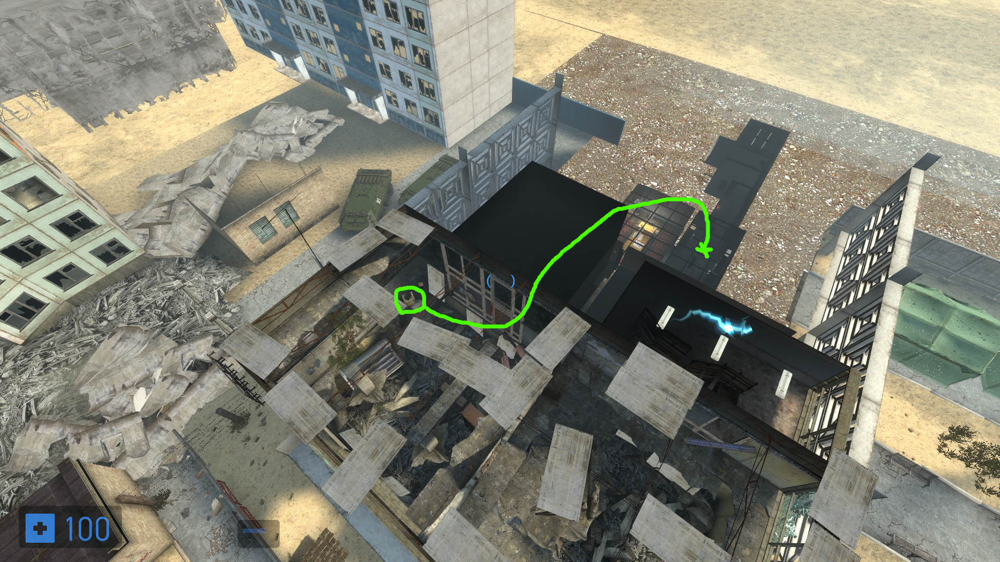

There are two new strats in Deadtown. One is to skip the crank & bridge completely (seen in this IL run) and second is a propclip route found by Rama, see the image below.

It is possible to BBT in the level Steppehills to skip the car completely as done in this IL run, however the timesave is very minimal with semi-high risk as you have to do the rest of the level single segment due to the nature of BBT.
It is possible to do another BBT in the level Commune to skip the final gate of the map as done in this IL run. The BBT is surprisingly precise so if you go for it in a full-game run, be sure to practice it first.
There is a huge skip in Airdrome by aquiring yesclip after the wake up cutscene by performing a few saveloads similarly to breenblast, this trick is called roki blast and was found by Rama.
There are currently no tutorials.